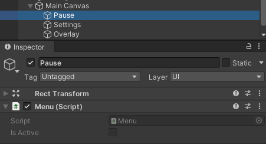
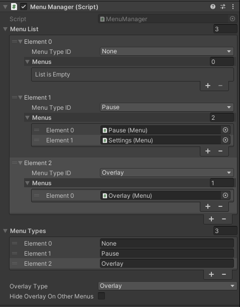
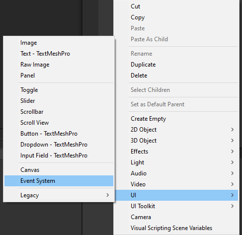
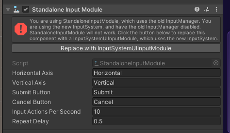
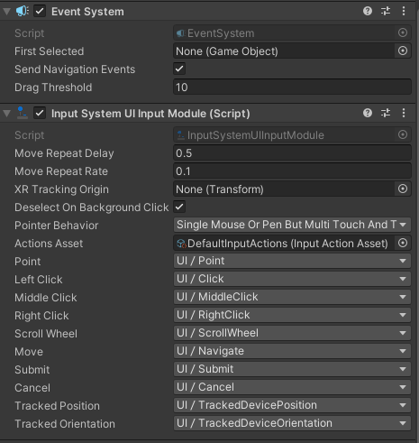
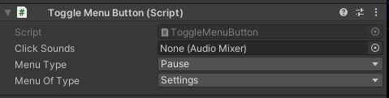

|
UnityToolbox
Brief documentation for all existing scripts.
|

|
|
UnityToolbox
Brief documentation for all existing scripts.
|
|
The namespace UnityToolbox.UI includes everything that can be used within a canvas.
In the following the MenuManager and each sub namespace of UnityToolbox.UI will be explained.
The scripts found here are developed to ease the creation of menus and their structures.
The prerequisites for using this system are:
This system allows for more specific implementations which can be found here:
The menu system consists of two parts. The Menu script which is placed on a canvas, and the MenuManager which sorts them.
First let us create a main canvas, which can be set up whatever. The actual Menu scripts are now placed on a child canvas as following:
| Menus |
|---|

|
With the menus being created, one can now create the MenuManager script.
First the names of the menu types need to be defined. With them in place, one can add the menu type to the menu list.
In this example, we have a pause menu, which consists of two separate canvases, the main pause menu and a settings menu.
One can also define an optional overlay. The overlay will always be opened, if no other menu is open. One can enable that the overlay to be hidden, if other menus are open.
| Menu Manager |
|---|

|
The MenuManager can now be used to toggle all defined menus.
Apart from the actual methods MenuManager.SetActiveMenu(..) and MenuManager.ToggleMenu(..) the toolbox provides button scripts for switching between menus.
For them and the other button scripts to work, one is required to have an EventSystem component in the scene. Create one as following:
| Event System |
|---|

|
If the current Input Module which comes with the object says to replace it with a different one, do that. It should look like the following:
| New Input Module |
|---|

|

|
All UI scripts can be placed on an UI element within the canvas and will only be clickable and visible if the menu is active.
First, let us look at two scripts for switching between menus.
The ToggleMenuButton is used to open and close menus by clicking a UI element on a canvas.
This script can only toggle a menu, if the current menu is of the same menu type as the one which should be toggled. If no menu or the overlay is currently open, the menu will displayed.
If the menu to be opened and the current open menu are the same, the menu will be closed.
The menu to be opened can be defined by a drop down. An AudioMixer can also be added for click sounds.
For further details of the audio management, please refer to the Audio Management Tutorial page.
| Toggle Button |
|---|

|
The other script GotoMenuButton is similar, but requires the actual Menu object and ignores the hierarchy restrictions.
Although the restrictions are ignored, the current menu type will still be set to the respective type of the menu, defined within the manager.
There are other basic buttons, which are self explanatory. The code documentation will also give a brief description.
Other than this, the LockMovement can lock movement for all MovementBase implementations.
Additionally, the scripts that are found within the UnityToolbox.UI.Menus.FlatMenu.OnHover namespace, are features which react once the mouse hovers over the UI element.
The names of the scripts should make the usage self explanatory too.